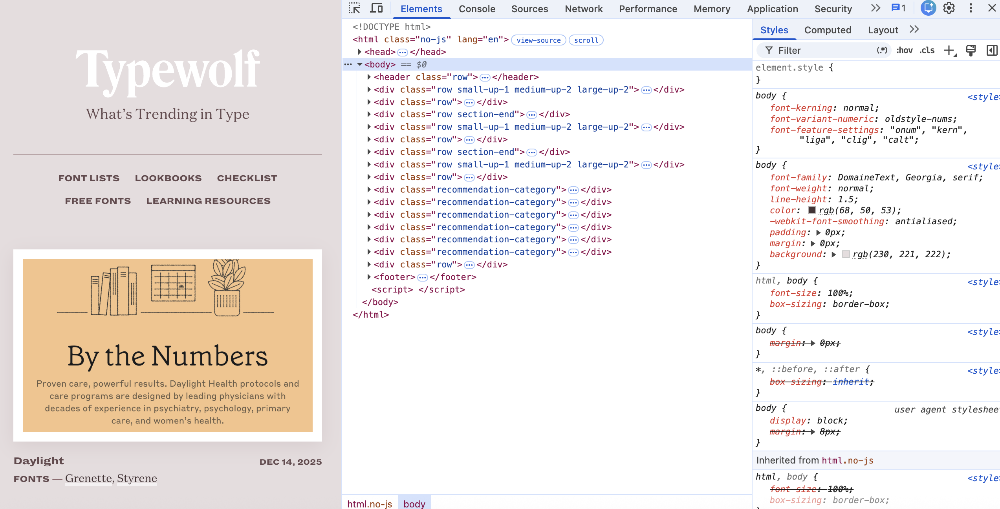

html.no-js
body
header.row
div.row.small-up-1.medium-up-2.large-up-2
div.row
div.row.section-end
div.row.small-up-1.medium-up-2.large-up-2
div.row
div.row.section-end
div.row.small-up-1.medium-up-2.large-up-2
div.row
div.recommendation-category
div.recommendation-category
div.recommendation-category
div.recommendation-category
div.recommendation-category
div.recommendation-category
div.row
footer
Typewolf https://www.typewolf.com/
The first thing I noticed is how flat the structure is. Almost everything sits directly inside body. There isn’t even a main element. Compared to other sites I looked at, it only took a couple of clicks to see the whole page.
The header.row holds the logo, the tagline “What’s Trending in Type”, a thin line, and the nav. Everything in it is centered. When I made the window smaller, the nav links wrapped onto two lines instead of turning into a hamburger menu.
The class names small-up-1 medium-up-2 large-up-2 looked strange at first. After looking it up, I found out they come from the Foundation framework. They mean the cards show in 1 column on small screens and 2 columns on medium and large screens. I tested this by resizing the browser, and the cards jumped from one column to two.
The page basically repeats the same pattern three times: a card grid, a div.row with a “View More” link, then a div.row.section-end that works as a divider. Site of the Day, the blog, and the guides all follow it, so the page has a steady rhythm even though it’s long.
The most interesting component was the Site of the Day card. Each one has a screenshot in a white frame, the site name and date on the same line (pushed to opposite sides), and a “FONTS —” line that lists the fonts the site uses. The font names are links, so every card sends you to another page on Typewolf.
The six div.recommendation-category blocks (Classification Lists, Fun Lists, etc.) all share one class. That’s why they look exactly the same even though the content is different.
Typography. The body font is DomaineText, a serif, with Georgia as the fallback. It’s used for the tagline, body text, and font names, and it makes the site feel like a magazine. The small labels (nav, site names, dates, “FONTS —”) use a bold uppercase sans-serif with wide letter spacing, so the two fonts are easy to tell apart. One detail I didn’t expect: the body turns on oldstyle-nums, kerning, and ligatures with font-feature-settings. I’ve never seen a site set those, but it makes sense for a site about type.
Color. The text isn’t black. It’s a dark brown, rgb(68, 50, 53), on a grey-pink background, rgb(230, 221, 222). The white frames around the screenshots stand out a lot against it.
Layout. Each div.row centers the content and limits its width. The header is centered, but the card content is left-aligned, so the top feels like a cover and the rest reads more like a list. The grid only changes at one breakpoint (1 column to 2), which keeps it really simple.